前言
在 前篇 已經撰寫完安裝用的設定檔，接下來就是安裝系統了。
這是一個系列文，目錄 在此。
下載相對應的安裝檔案
如果是 Proxmox 或是實體機器，可以參考 Talos - 安裝 Extension，進 talos image factory 網站下載包含需要的 Extension 的 metal 版 ISO 檔。
Proxmox 記得多勾 qemu guest 的 Extension。
若是 ESXi，可以直接下載 ova 格式：https://github.com/siderolabs/talos/releases/download/v1.7.2/vmware-amd64.ova
建立 VM
Proxmox
建立 Proxmox VM 時要注意 CPU 選擇 x86-64-v2，在 Proxmox 8.0 以前預設的 kvm64 是不支援的。
其他設定可以依照自己需求，能掛上 ISO 開機即可。詳情可參考 官方文件
ESXi
ESXi 可使用 ISO 開機，後續的作法如同 Proxmox
也可使用獨有的方式，以 ova 檔案建立 VM，建立後調整硬碟大小至適當大小，並加上以下設定
guestinfo.talos.config=$(base64 -i controlplane.yaml)
disk.enableUUID=1
圖形化介面操作大概是：
第一步選擇 OVF File，依照步驟建立 VM 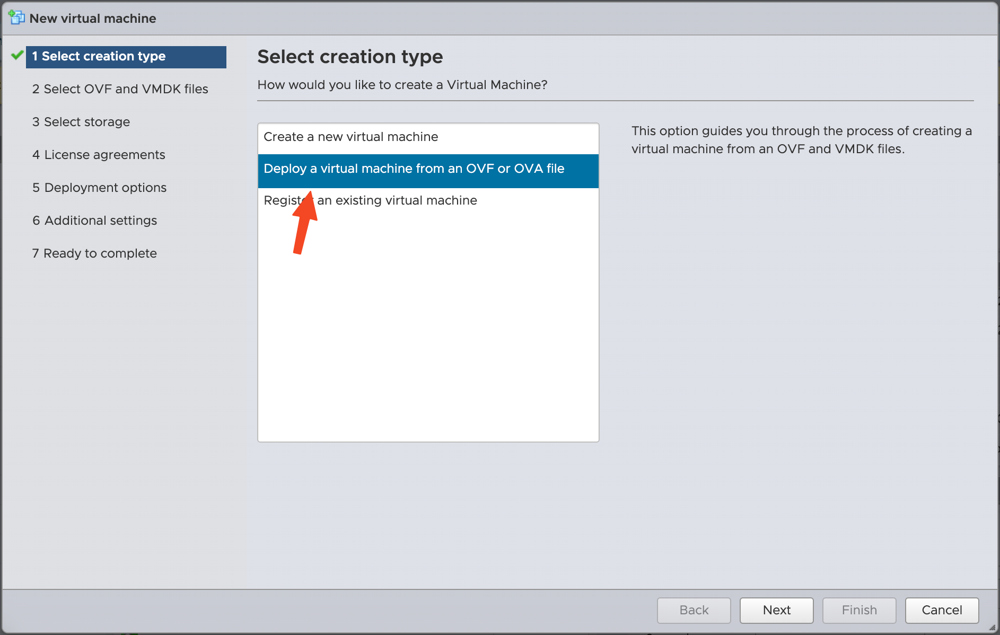
建立完 VM 後，將硬碟、CPU、RAM 調整至適當的大小 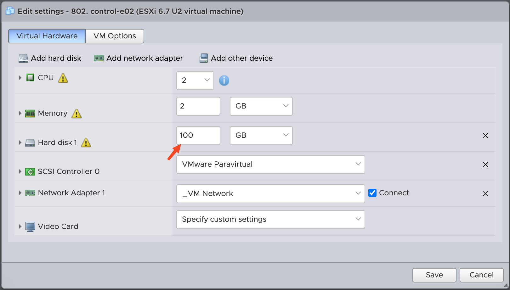
進入進階設定 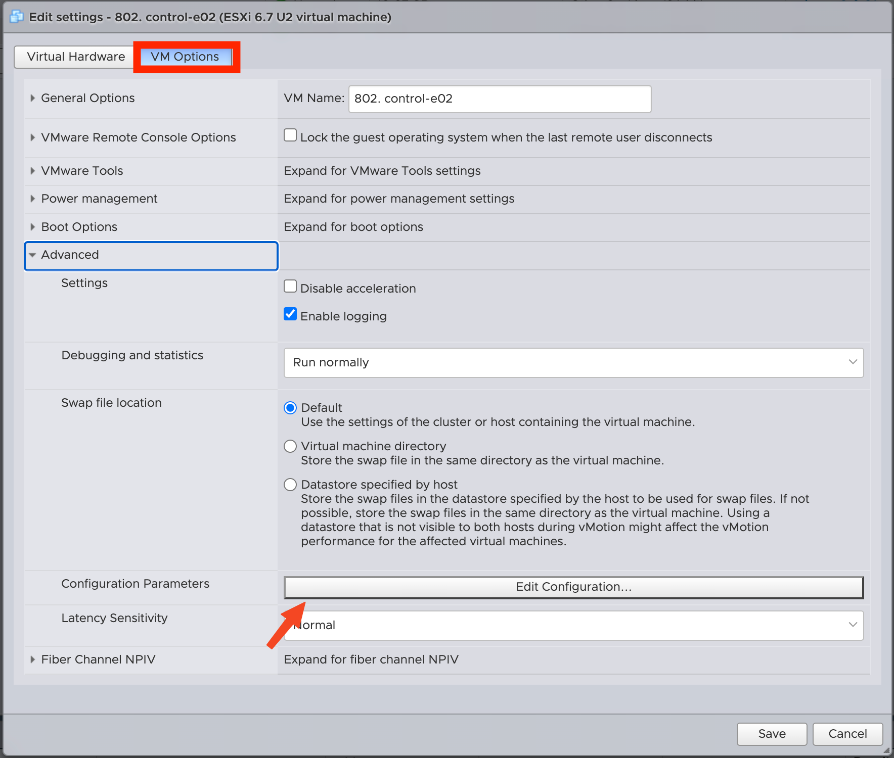
新增兩個鍵值，一個是 guestinfo.talos.config，另一個是 disk.enableUUID
guestinfo.talos.config的值需要將對應的controlplane.yaml轉成 base64 後貼上disk.enableUUID的值設為1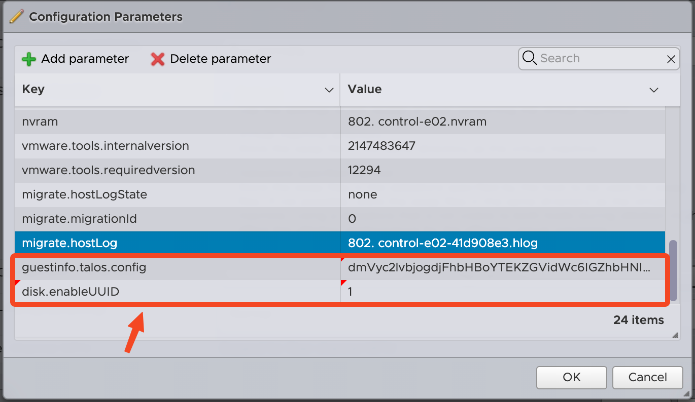
VM 開機
避免出錯，我有先將所有 VM 產生的 MAC Address 填入 DHCP Server 綁定 IP 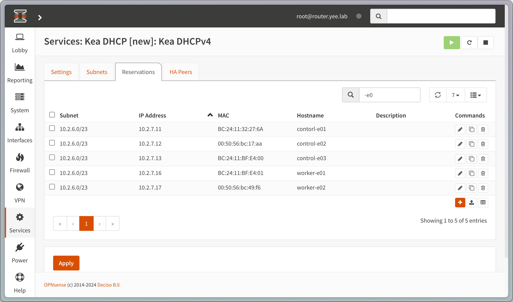
Proxomx
此時的 Proxmox 應該會是 Maintenance Mode，等待我們下指令送出 Machine Configuration 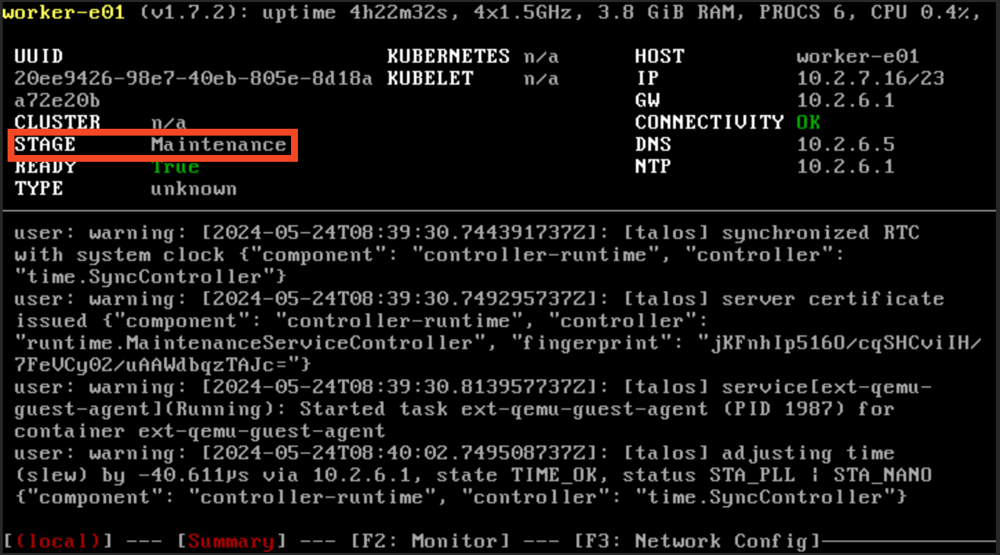
執行 talosctl apply-config 送出指令
$ talosctl apply-config --talosconfig=./efficient-cluster01/talosconfig --nodes=10.2.7.11 --file=./efficient-cluster01/controlplane.11.yaml --insecure;
$ talosctl apply-config --talosconfig=./efficient-cluster01/talosconfig --nodes=10.2.7.13 --file=./efficient-cluster01/controlplane.13.yaml --insecure;
$ talosctl apply-config --talosconfig=./efficient-cluster01/talosconfig --nodes=10.2.7.16 --file=./efficient-cluster01/worker.16.yaml --insecure;下完 talosctl apply-config 後，會開始進入 Installing Mode，並重新開機
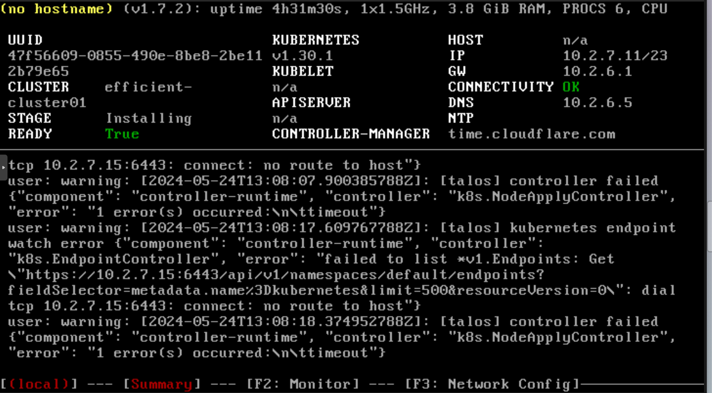
重新開機後，進入 Booting Mode，kubelet 會從 unhealthy 變成 healthy
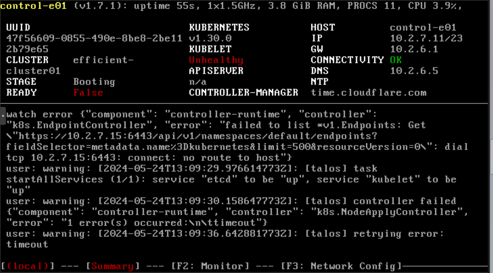 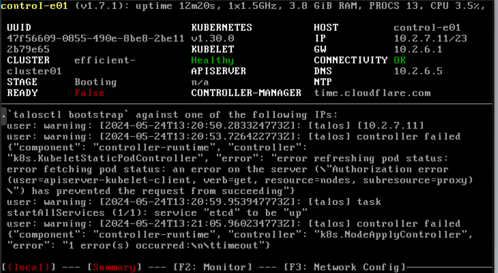
ESXi
因為前面已經先用 guestinfo.talos.config 餵給 ESXi VM machine config 了，會直接進入 Booting Mode，不需要再下指令
但若使用 ISO 開機，就要像 Proxmox 的步驟下 talosctl apply-config
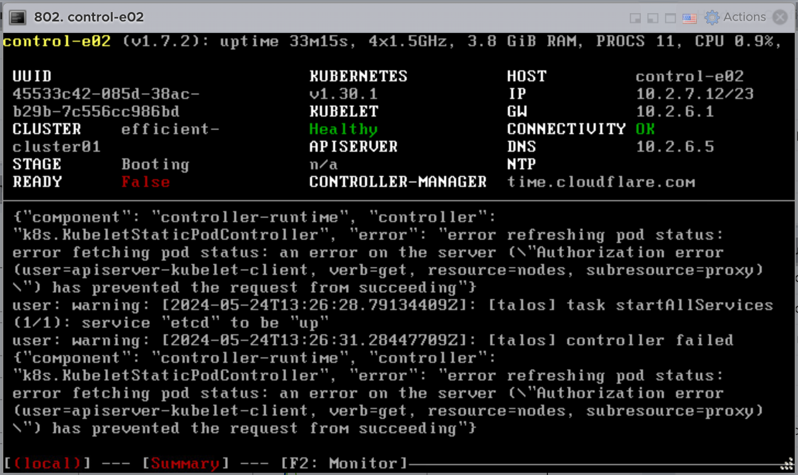
設定 talosctl
在啟動機器之前可以先設定 talosctl，往後下指令就不需要那麼繁瑣，每一次都要加上 --talosconfig 指定設定檔位置
# controlplanes
$ talosctl --talosconfig=./efficient-cluster01/talosconfig config endpoint 10.2.7.11 10.2.7.12 10.2.7.13
# all nodes (controlplane + worker)
$ talosctl --talosconfig=./efficient-cluster01/talosconfig config node 10.2.7.11 10.2.7.12 10.2.7.13 10.2.7.16 10.2.7.17
$ talosctl config merge ./efficient-cluster01/talosconfig
# Config 會被 merge 至 ~/.talos/config
# verify
$ talosctl config contexts
# CURRENT NAME ENDPOINTS NODES
# * efficient-cluster01 10.2.7.11,10.2.7.12,10.2.7.13 10.2.7.11,10.2.7.12,10.2.7.13...
$ talosctl get members -n 10.2.7.11
# NODE NAMESPACE TYPE ID VERSION HOSTNAME MACHINE TYPE OS ADDRESSES
# 10.2.7.11 cluster Member control-e01 20 control-e01 controlplane Talos (v1.7.3) ["10.2.7.11"]
# 10.2.7.11 cluster Member control-e02 12 control-e02 controlplane Talos (v1.7.3) ["10.2.7.12"]
# 10.2.7.11 cluster Member control-e03 18 control-e03 controlplane Talos (v1.7.3) ["10.2.7.13"]
# 10.2.7.11 cluster Member worker-e01 17 worker-e01 worker Talos (v1.7.3) ["10.2.7.16"]
# 10.2.7.11 cluster Member worker-e02 16 worker-e02 worker Talos (v1.7.3) ["10.2.7.17"]啟動
進入 Booting Mode 後，等待 control plane 的 kubelet 進入 healthy 狀態，就可以開始啟用叢集了
啟用叢集只需要對其中一台 control plane 下指令即可
$ talosctl bootstrap -n 10.2.7.11此時會發現 stage 會變成 running，但 ready 會是 false，因為還沒有加上 CNI 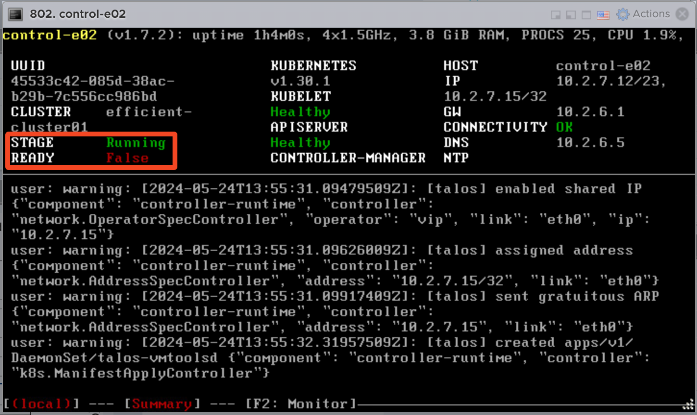
下載 kubeconfig
使用 talosctl kubeconfig 可以協助我們下載 kubeconfig，這樣就可以使用 kubectl 來操作叢集了
$ talosctl kubeconfig --nodes 10.2.7.11
# ~/.kube/config 會被 update 叢集
$ kubectl get nodes
# NAME STATUS ROLES AGE VERSION
# control-e01 NotReady control-plane 117s v1.30.1
# control-e02 NotReady control-plane 2m4s v1.30.1
# control-e03 NotReady control-plane 2m v1.30.1
# worker-e01 NotReady <none> 98s v1.30.1
# worker-e02 NotReady <none> 116s v1.30.1安裝 CNI
由上面 kubectl get nodes 的結果可以看到，叢集還是 NotReady 的狀態，因為我們還沒有安裝 CNI
$ helm repo add cilium https://helm.cilium.io/
# "cilium" has been added to your repositories
$ helm repo update
# Hang tight while we grab the latest from your chart repositories...
# ...Successfully got an update from the "cilium" chart repository
# Update Complete. ⎈Happy Helming!⎈
$ helm install \
cilium \
cilium/cilium \
--version 1.15 \
--namespace kube-system \
--set ipam.mode=kubernetes \
--set=kubeProxyReplacement=true \
--set=securityContext.capabilities.ciliumAgent="{CHOWN,KILL,NET_ADMIN,NET_RAW,IPC_LOCK,SYS_ADMIN,SYS_RESOURCE,DAC_OVERRIDE,FOWNER,SETGID,SETUID}" \
--set=securityContext.capabilities.cleanCiliumState="{NET_ADMIN,SYS_ADMIN,SYS_RESOURCE}" \
--set=cgroup.autoMount.enabled=false \
--set=cgroup.hostRoot=/sys/fs/cgroup \
--set=k8sServiceHost=localhost \
--set=k8sServicePort=7445 \
--set=hubble.listenAddress=":4244" \ # hubble ui 是 cilium 內建的監控工具，可以觀察網路流量
--set=hubble.relay.enabled=true \
--set=hubble.ui.enabled=true
# NAME: cilium
# LAST DEPLOYED: Sat May 25 00:02:42 2024
# NAMESPACE: kube-system
# STATUS: deployed
# REVISION: 1
# TEST SUITE: None
# NOTES:
# You have successfully installed Cilium with Hubble.
# Your release version is 1.15.5.
# For any further help, visit https://docs.cilium.io/en/v1.15/gettinghelp安裝完 CNI 後，叢集的狀態就會變成 Ready 了
$ kubectl get nodes
# NAME STATUS ROLES AGE VERSION
# control-e01 Ready control-plane 12m v1.30.1
# control-e02 Ready control-plane 12m v1.30.1
# control-e03 Ready control-plane 12m v1.30.1
# worker-e01 Ready <none> 12m v1.30.1
# worker-e02 Ready <none> 12m v1.30.1大功告成，叢集已經啟用完成，可以開始部署應用程式了